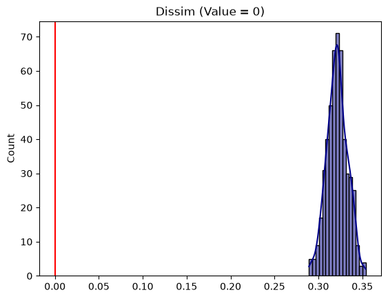
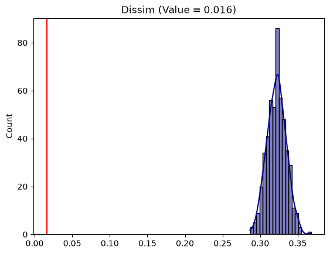
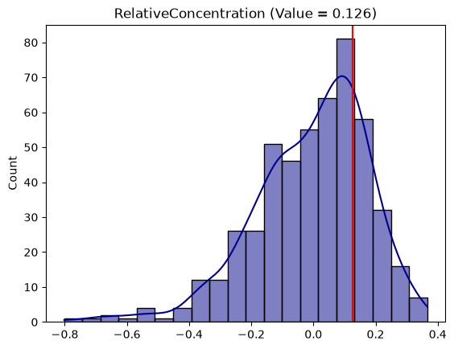
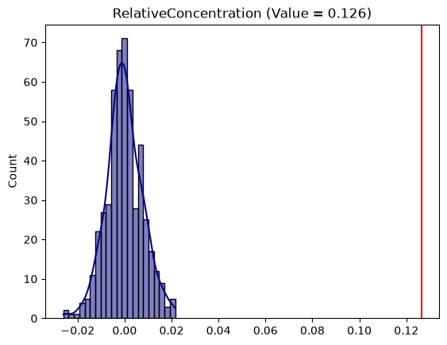
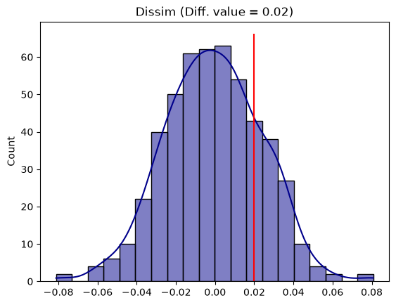
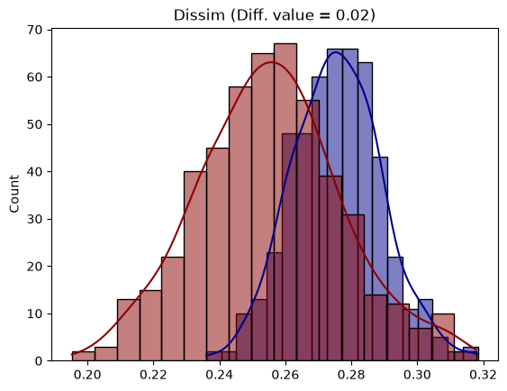

Single Value and Comparative Inference¶
The segregation package provides a framework for examining whether segregation index values are statistically significant (whether a single index is far enough away from “no segregation” that it could not happen by chance, or whether two indices are different enough from one another). This framework is useful for understanding, for example:
whether the schools in a district are segregated
whether segregation in City A is greater than City B
whether segregation at Time 2 is greater than Time 1
Depending on the segregation index being examined and the assumptions of the researcher, a variety of estimation techniques are available. This notebook walks through the assumptions and outcomes of each using the Sacramento demonstration dataset bundled with libpysal.
%load_ext watermark
%watermark -a 'eli knaap' -v -d -u -p segregation,geopandas,libpysal
Author: eli knaap
Last updated: 2026-09-16
Python implementation: CPython
Python version : 3.14.7
IPython version : 9.17.1
segregation: 2.6.1.dev2+g89caf1309
geopandas : 1.1.4
libpysal : 4.15.0
import geopandas as gpd
import matplotlib.pyplot as plt
from libpysal.examples import load_example
from segregation import singlegroup, inference
sacramento = gpd.read_file(load_example("Sacramento1").get_path("sacramentot2.shp"))
sacramento = sacramento.to_crs(sacramento.estimate_utm_crs())
sacramento["pct_hisp"] = (sacramento["HISP"] / sacramento["TOT_POP"]).fillna(0)
fig, ax = plt.subplots(figsize=(8, 8))
sacramento.plot("pct_hisp", scheme="quantiles", cmap="Blues", legend=True, ax=ax)
ax.axis("off")
ax.set_title("% Hispanic/Latino, Sacramento region")
Text(0.5, 1.0, '% Hispanic/Latino, Sacramento region')

Single-Value Inference¶
In many contexts, researchers are interested in whether some measured level of segregation is statistically different from a random process. That is, is the level of segregation we observe in place X greater than we would expect if there were no segregation at all?
For single-value inference, the segregation package tests whether the observed segregation index differs from the expected value of a segregation index under the null hypothesis of no segregation. As Boisso et al. show, the expected value of “no segregation” is not necessarily an index value of 0. The SingleValueTest class offers computational inference via a variety of methods for simulating observations under different randomization schemes (see the 05_simulating_random_population notebook for details).
Evenness¶
D = singlegroup.Dissim(sacramento, group_pop_var="HISP", total_pop_var="TOT_POP")
D.statistic
np.float64(0.32184656076566864)
The dissimilarity index is a measure of evenness, so it is reasonable to use the evenness null approach in the SingleValueTest class.
test = inference.SingleValueTest(D, null_approach="evenness")
test.p_value
np.float64(0.0)
The plot method shows the simulated null distribution in blue and the observed value for the segregation statistic in red.
test.plot()
<Axes: title={'center': 'Dissim (Value = 0.322)'}, ylabel='Count'>
test.est_sim.mean()
np.float64(0.01611761602389175)
The est_sim attribute contains the segregation index values calculated for the synthetic datasets. If the population were perfectly even across geographic units, the unequal group totals would still produce a small, barely-above-zero Dissimilarity value, tightly distributed. Since the observed value is far larger, we reject the null of “no segregation.”
Bootstrap¶
As an alternative to simulating a null distribution, another reasonable test for the Dissimilarity index is a bootstrap approach, used to simulate the distribution of the Dissimilarity index itself; a given value for “no segregation” can then be tested against this reference distribution. In practical terms, the bootstrapped index value can be tested against 0, or against the value given by a null distribution such as evenness above.
# standard test against D == 0
test_bootstrap = inference.SingleValueTest(D, null_approach="bootstrap")
test_bootstrap.plot()
<Axes: title={'center': 'Dissim (Value = 0)'}, ylabel='Count'>

# test against the mean of the evenness null distribution estimated above
test_bootstrap2 = inference.SingleValueTest(
D, null_approach="bootstrap", null_value=test.est_sim.mean()
)
test_bootstrap2.plot()
<Axes: title={'center': 'Dissim (Value = 0.016)'}, ylabel='Count'>

Whether we test against 0 or the simulated value from evenness, the inference is the same: we reject the null.
Random Geographic Permutation¶
We might instead examine a spatial segregation index, such as the Relative Concentration index, for which a different test is appropriate. The random geographic permutation test shuffles the values of tracts in space to create a spatially-random distribution. It leaves the total population of each group in each geographic unit intact, but randomizes where the unit exists in space.
RCO = singlegroup.RelativeConcentration(
sacramento, group_pop_var="HISP", total_pop_var="TOT_POP"
)
RCO.statistic
np.float64(0.12637769003830293)
rco_test_permutation = inference.SingleValueTest(
RCO, null_approach="geographic_permutation"
)
rco_test_permutation.p_value
np.float64(0.488)
rco_test_permutation.plot()
<Axes: title={'center': 'RelativeConcentration (Value = 0.126)'}, ylabel='Count'>

Evenness Geographic Permutation¶
It is also possible to combine the two previous approaches: first generate a simulated population under the assumption of evenness, then geographically permute the simulated data.
rco_test_evenperm = inference.SingleValueTest(
RCO, null_approach="even_permutation"
)
rco_test_evenperm.plot()
<Axes: title={'center': 'RelativeConcentration (Value = 0.126)'}, ylabel='Count'>

Comparative Inference¶
Comparative inference is particularly useful in studying residential segregation because it facilitates both temporal and spatial comparisons, allowing researchers to ask whether one place is more segregated than another, or whether a given place has become more or less segregated over time.
The Sacramento example has no time dimension, so to have two contexts to compare we split the region into a western and an eastern half at the median tract-centroid longitude, and compare Hispanic/Latino Dissimilarity between them. As with single-value inference, the TwoValueTest class offers several techniques for conducting the analysis.
sacramento["cx"] = sacramento.geometry.centroid.x
split = sacramento["cx"].median()
west = sacramento.loc[sacramento["cx"] <= split].copy()
east = sacramento.loc[sacramento["cx"] > split].copy()
len(west), len(east)
(202, 201)
D_west = singlegroup.Dissim(west, group_pop_var="HISP", total_pop_var="TOT_POP")
D_east = singlegroup.Dissim(east, group_pop_var="HISP", total_pop_var="TOT_POP")
D_west.statistic, D_east.statistic
(np.float64(0.2773533678182424), np.float64(0.2575519755951142))
Random Labeling¶
Random labelling, based on Rey and Sastré-Gutiérrez, creates a set of synthetic observations by shuffling geographic units between the two regions, calculates segregation statistics on these synthetic datasets, then takes the difference between the statistics. This produces a distribution of differences under the null that there is no difference between the regions, and we test the observed difference against this distribution.
test_label = inference.TwoValueTest(D_west, D_east, null_approach="random_label")
test_label.p_value
np.float64(0.424)
test_label.plot()
<Axes: title={'center': 'Dissim (Diff. value = 0.02)'}, ylabel='Count'>

Plotting the class shows the distribution of simulated differences in blue and the estimated difference in red.
Bootstrap¶
The bootstrap test, based on Davidson 2009, uses bootstrap resampling to estimate a distribution of the segregation index for each region, providing an estimate of each index’s variance. A means test then checks whether the mean of each distribution is significantly different from the other.
test_bootstrap_two = inference.TwoValueTest(D_west, D_east, null_approach="bootstrap")
test_bootstrap_two.p_value
np.float64(0.42921354923985183)
test_bootstrap_two.plot()
<Axes: title={'center': 'Dissim (Diff. value = 0.02)'}, ylabel='Count'>

Note: the bootstrap test is only appropriate for aspatial segregation indices, first because simple bootstrap techniques do not account for spatial autocorrelation, and second because bootstrapping spatial units results in synthetic regions that have duplicate units (so the data are not planar-enforced and a spatial index cannot be computed).
For comparative inference, there are also additional randomization approaches based on counterfactual population generation, described in the 07_decomposition_example notebook.